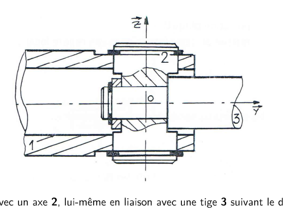
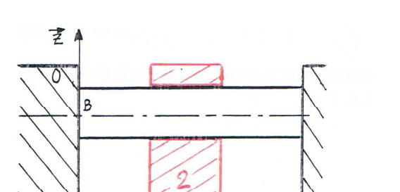
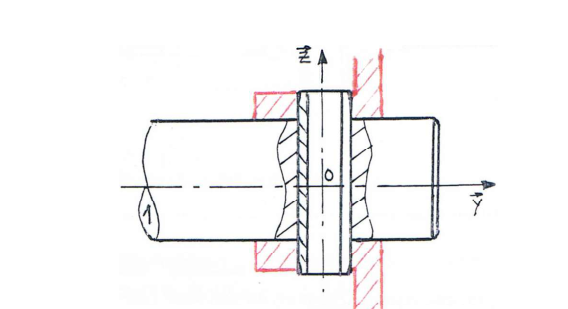
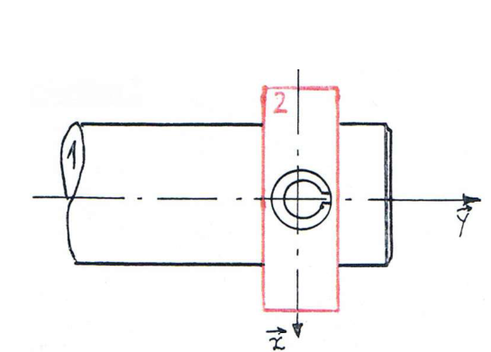
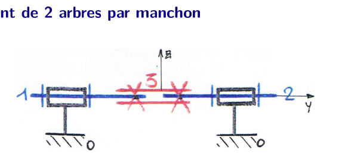
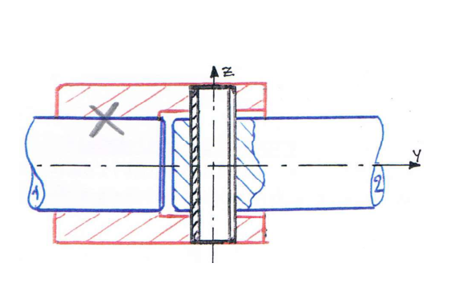
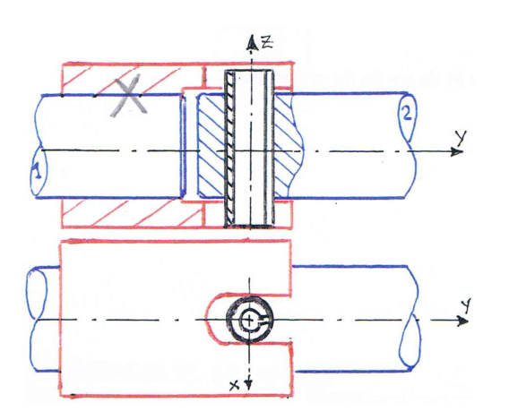
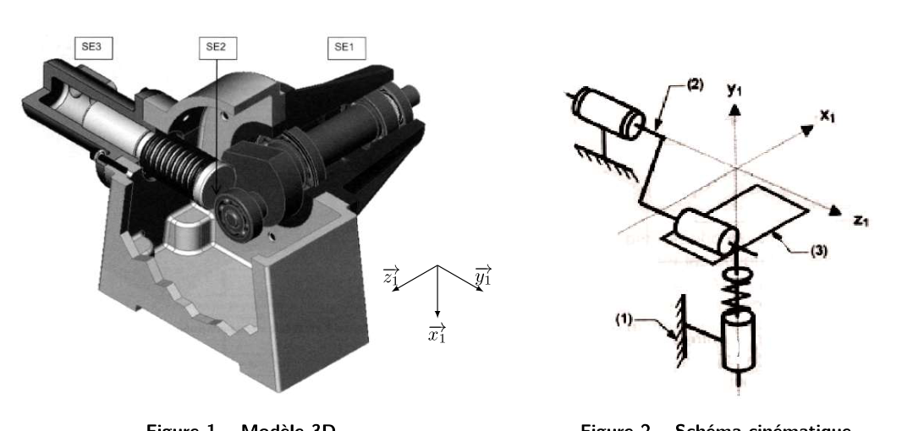
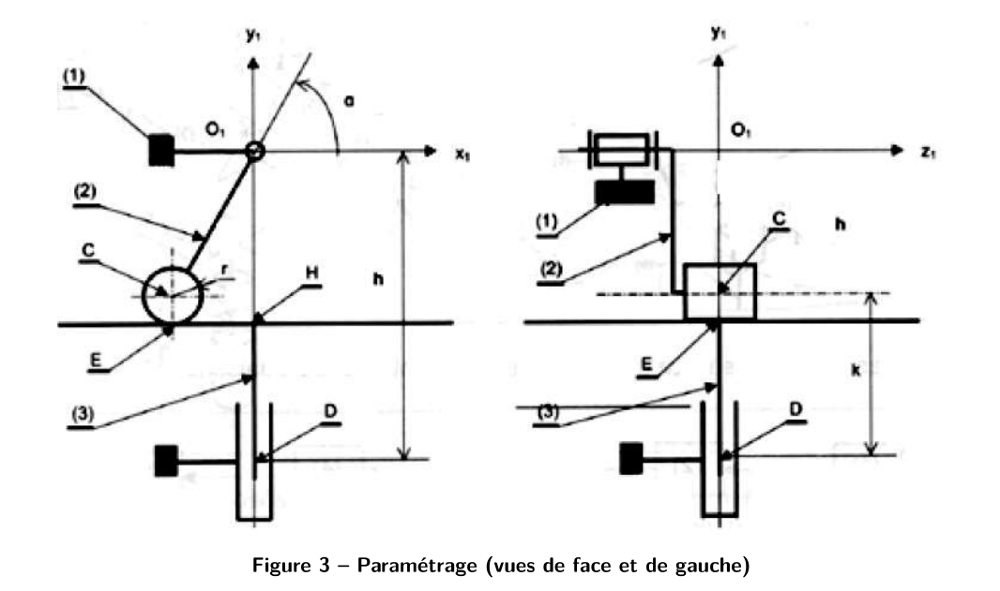

Torseur d'actions transmissibles\(\{\mathcal T_{1\to2}\}=\{\vec R\,;\ \vec M_A\}_A\) : force + moment
Varignon (changement de point)\(\vec M_B=\vec M_A+\vec{BA}\wedge\vec R\) — \(\vec R\) ne change jamais
Varignon en cinématique\(\vec V(B\in S)=\vec V(A\in S)+\vec\Omega_S\wedge\vec{AB}\)
Cas \(\vec R=\vec 0\)le moment est identique en tout point (torseur couple) : rien à transporter
Changement de baseon tourne \(\vec R\) et \(\vec M_A\) avec les mêmes formules de projection : \(\vec y_2=\cos\theta\,\vec y_1+\sin\theta\,\vec z_1\), \(\vec z_2=-\sin\theta\,\vec y_1+\cos\theta\,\vec z_1\)
Point ≠ basechanger de point et changer de base sont deux opérations indépendantes
Complémentaritécinématique et statique d'une liaison : jamais de composante non nulle sur le même ddl, donc \(\text{ddl}+\text{inconnues statiques}=6\)
Transporter un torseur1) écrire \(\vec{BA}\) dans la base de travail ; 2) calculer \(\vec{BA}\wedge\vec R\) ; 3) l'ajouter à \(\vec M_A\) ; 4) recopier \(\vec R\) tel quel
Vérifier un torseurtoute composante nulle dans le torseur cinématique doit être libre (non nulle) dans le torseur d'actions, et inversement
📌 Fiche mémo 2/6 — Les 11 liaisons usuelles (ddl · inconnues · torseurs en \(O\), axe \(\vec x\))
Calculer \(h\) — méthode complètegraphe → \(\gamma\) à l'œil → \(E_c=6\gamma\) → \(I_c\) par le tableau → fermeture sur 6 composantes → rang → \(m=I_c-rg\) → Mickey → vérifier \(h\ge0\) entier
Calculer \(h\) — raccourcisi \(m\) se voit à l'œil (jeu du mécanisme réel) : \(h=m-I_c+E_c\) directement, sans aucun rang
Trouver \(m\) à l'œilbloquer l'entrée, compter ce qui bouge encore (rotation propre, glissement parasite) → \(m_i\) ; ajouter les entrées pilotables → \(m_u\)
Équation « \(0=0\) »ne compte pas dans le rang : c'est elle qui fabrique les degrés d'hyperstatisme
Équation « \(0=x\neq0\) »impossible → erreur de modèle (liaison mal choisie, torseur mal transporté)
Double vérificationrefaire avec Messi : \(E_s\), \(I_s\), \(h=m-E_s+I_s\) doit redonner le même entier
Méthode « intuitive »fermer la boucle à la main : chaque petit défaut (\(d\theta\), \(dD\)) qu'aucune liaison n'absorbe = 1 degré de \(h\)
Inconnues hyperstatiquesen statique, ce sont les composantes qu'on ne peut pas calculer (ex. pompe : les moments \(L_O,L_E,L_D\) hors du plan de fonctionnement)
Plan ou spatial ?plan : \(E_c=3\gamma\) et liaisons planes ; spatial : \(E_c=6\gamma\). Le spatial donne un \(h\) plus grand (il compte parallélisme et planéité)
📌 Fiche mémo 5/6 — Association de liaisons (série / parallèle)
Série (chaîne ouverte)1 → 2 → 3 : un solide commun entre deux liaisons, extrémités différentes
Série — cinématiqueon somme les torseurs, au même point : \(\{\mathcal V_{3/1}\}=\{\mathcal V_{3/2}\}+\{\mathcal V_{2/1}\}\)
Série — statiqueon égalise : \(\{\mathcal T_{1\to3}\}=\{\mathcal T_{1\to2}\}=\{\mathcal T_{2\to3}\}\)
Parallèlemême paire de solides reliée par plusieurs liaisons (ex. 2 colonnes ↔ 1 coulisseau)
Parallèle — cinématiqueon égalise les torseurs, réduits au même point (Varignon)
Parallèle — statiqueon somme les torseurs d'actions, au même point
0. Rappels sur les torseurs — Varignon, changement de point, changement de base
0.1 Définition
Définition
Un torseur \(\{T\}\) est un champ de vecteurs équiprojectif, entièrement défini par sa
résultante \(\vec R\) (un seul vecteur, le même en tout point) et son moment \(\vec M_A\)
en un point A (qui change avec le point) :
\[\{T\} = \left\{ \vec R \, ; \ \vec M_A \right\}_A\]
Deux torseurs très utilisés dans ce chapitre partagent la même structure mathématique :
Torseur des actions mécaniques transmissibles \(\{\mathcal T_{1\to2}\} = \{\vec R\, ;\ \vec M_A\}_A\)
(résultante = force, moment = moment/couple).
0.2 Relation de Varignon — changement de point (de réduction)
★★ À savoir par cœur
Pour un même torseur, le moment en un point B se déduit du moment en A par :
\[\boxed{\ \vec M_B = \vec M_A + \vec{BA} \wedge \vec R\ }\]
C'est la relation de Varignon (ou « relation de transport des moments »). La résultante \(\vec R\)
ne change jamais quand on change de point de réduction — seul le moment change.
Cas particulier — torseur cinématique
Pour un torseur cinématique, la même relation s'écrit avec les notations habituelles (c'est le champ des
vitesses d'un solide, la formule de Varignon appliquée aux vitesses) :
\[\vec V(B\in S) = \vec V(A\in S) + \vec\Omega_{S} \wedge \vec{AB} = \vec V(A\in S) + \vec{BA}\wedge\vec\Omega_S\]
★ Astuce pratique
Si \(\vec R = \vec 0\) (glisseur d'axe nul, ou torseur couple), le moment est le même en tout point :
pas besoin de transporter. C'est le cas d'une liaison qui ne transmet qu'un couple pur (rare) ou d'un
torseur cinématique de rotation pure autour d'un axe fixe passant par les deux points.
0.3 Changement de base
★ Méthode
\(\vec R\) et \(\vec M_A\) sont de vrais vecteurs : pour les exprimer dans une autre base
\((\vec x_2,\vec y_2,\vec z_2)\) obtenue par rotation d'angle \(\theta\) autour d'un axe commun (typiquement
\(\vec x_1=\vec x_2\)), on remplace chaque composante grâce aux formules de projection (à lire sur
la figure de changement de base) :
\[\vec y_2 = \cos\theta\,\vec y_1 + \sin\theta\,\vec z_1 \qquad\qquad \vec z_2 = -\sin\theta\,\vec y_1 + \cos\theta\,\vec z_1\]
On applique la même rotation à \(\vec R\) et à \(\vec M_A\) (ce sont deux vecteurs indépendants du
même torseur, mais tous deux tournent avec la base de la même façon). Piège classique : le point de
réduction ne change pas avec la base — changement de base et changement de point sont deux opérations
indépendantes, on peut faire l'une sans l'autre.
0.4 Exemples de torseurs usuels et leur écriture
★ Le vrai raccourci (cf. §2)
On ne réinvente jamais ces torseurs : on les lit dans le tableau ci-dessous (liaison d'axe
\((O,\vec x)\), base \((\vec x,\vec y,\vec z)\)) puis on les transporte (Varignon) / change de base
seulement si le point ou la base imposé par l'énoncé diffère.
Piège classique
Le torseur d'action transmissible est le complémentaire du torseur cinématique composante par
composante (jamais les deux torseurs n'ont de composante non nulle sur le même ddl) —
c'est le moyen le plus rapide de vérifier qu'on n'a pas inversé les deux tableaux.
1. Vocabulaire de base
Définitions
\(N_P\) : nombre de pièces du mécanisme (bâti inclus).
\(N_L\) : nombre de liaisons (arêtes du graphe des liaisons).
\(\gamma\) : nombre cyclomatique = nombre de boucles indépendantes du graphe.
\[\boxed{\gamma = N_L - N_P + 1}\]
Le plus simple : compter les boucles à l'œil sur le graphe des liaisons — c'est souvent plus rapide
que la formule.
2. Tableau des liaisons usuelles — la façon simple d'avoir \(I_c\) et \(I_s\)
★ Le vrai raccourci
\(I_c\) et \(I_s\) ne se « calculent » pas : on les lit liaison par liaison sur un tableau, puis on
additionne. Pour chaque liaison : ddl (mobilité) + inconnues statiques = 6, toujours.
Liaison
ddl (→ \(I_c\))
Inconnues statiques (→ \(I_s\))
Encastrement
0
6
Pivot
1
5
Glissière
1
5
Hélicoïdale
1 (couplé)
5
Pivot glissant
2
4
Sphérique à doigt (rotule à doigt)
2
4
Appui plan
3
3
Sphérique (rotule)
3
3
Linéaire annulaire (sphère-cylindre)
4
2
Linéaire rectiligne
4
2
Ponctuelle (sphère-plan)
5
1
Méthode : pour \(I_c\), on additionne la colonne « ddl » de toutes les
\(N_L\) liaisons du mécanisme ; pour \(I_s\), on additionne la colonne « inconnues statiques ». Pas besoin
d'écrire un seul torseur pour ça.
3. Toutes les formules à connaître par cœur
3.1 Approche cinématique
★ À savoir
\[E_c = 6\gamma \qquad\qquad m = I_c - rg[E_c] \qquad\qquad h = E_c - rg[E_c]\]
\(rg[E_c]\) = rang du système d'équations de fermeture cinématique (nombre d'équations vraiment
indépendantes, celles qui ne sont pas des \(0=0\)).
3.2 Approche statique
★ À savoir
\[E_s = 6(N_P-1) \qquad\qquad m = E_s - rg[E_s] \qquad\qquad h = I_s - rg[E_s]\]
Le « \(-1\) » : on ne peut pas isoler le bâti (référentiel), donc on étudie \(N_P-1\) pièces.
À retenir
Les deux approches donnent le même résultat final pour \(m\) et \(h\) : \(I_c - E_c = E_s - I_s\).
En pratique, l'approche cinématique est presque toujours plus rapide (moins d'équations, grandeurs
observables) — cf. §6.
4. Le degré d'hyperstatisme \(h\) — Mickey & Messi
En combinant les formules ci-dessus (\(m=I_c-rg[E_c]\) et \(h=E_c-rg[E_c]\), ou \(m=E_s-rg[E_s]\) et
\(h=I_s-rg[E_s]\)), on obtient deux formes équivalentes de \(h\) — une par approche — qui ne demandent
plus jamais de calculer un rang une fois qu'on connaît \(m\) :
★★★ LA formule à ne jamais oublier (moyen mnémotechnique du prof)
🐭 Mickey
\[h = m - I_c + E_c\]
(approche cinématique)
⚽ Messi
\[h = m - E_s + I_s\]
(approche statique)
Pourquoi ça marche comme moyen mnémotechnique
Les deux formules ont exactement la même « forme » : \(h = m - (\text{les équations « E »}) + (\text{les
inconnues « I »})\) — seule la lettre change selon l'approche (\(c\) pour cinématique, \(s\) pour statique).
Mickey ↔ ses initiales rappellent cinématique ; Messi ↔ statique. Retenez juste
« \(h = m\) moins E plus I », même indice partout.
5. Méthode simple, étape par étape (approche cinématique — la plus rapide)
★ Marche à suivre
Dessiner le graphe des liaisons (1 pièce = 1 bulle, 1 liaison = 1 trait) et compter les
boucles à l'œil → \(\gamma\). Chaîne simple à une seule boucle fermée : \(\gamma = 1\).
\(E_c = 6\gamma\) (une seule multiplication).
\(I_c\) : pour chaque liaison du graphe, lire son ddl dans le tableau du §2, puis additionner.
Écrire la fermeture cinématique \(\{\mathcal V_{i/i}\}=\{0\}\) sur la (les) boucle(s), projeter
sur les 6 composantes.
Résoudre / repérer le rang : chaque équation de type \(0=x\) avec \(x\ne0\) impossible → erreur de
modèle ; chaque équation de type \(0=0\) → pas comptée dans le rang (c'est un « défaut » = future
composante de \(h\)). \(rg[E_c]\) = nombre d'équations réellement utiles.
\(m = I_c - rg[E_c]\).
Mickey : \(h = m - I_c + E_c\).
Vérifier : \(h\) doit être un entier \(\ge 0\). Si \(h<0\), il y a une erreur de modèle
(mécanisme mal posé) — cf. §6.
Piège classique
Pas besoin de résoudre le système en entier pour avoir \(rg[E_c]\) : il suffit souvent de repérer les
équations qui se recopient (dépendantes) ou qui donnent \(0=0\) directement en les écrivant — pas besoin
d'algèbre linéaire lourde pour les cas de TD.
Méthode « intuitive » (bonus, cf. TD pompe à piston radial)
Sans poser d'équations : on regarde, en fermant la boucle « à la main » (montage réel), quels petits
défauts géométriques (un angle \(d\theta\), une distance \(dD\)) empêcheraient physiquement le montage.
Chaque défaut gênant et non compensé par une autre liaison de la chaîne correspond à 1 degré
d'hyperstatisme. C'est plus rapide sur des mécanismes simples à une boucle, mais moins sûr que la méthode
par le rang pour les cas complexes.
6. Interpréter le résultat
Valeur
Signification
\(h = 0\)
Isostatique — pas de redondance, montage toujours possible sans jeu ni contrainte.
\(h = n > 0\)
Hyperstatique de degré \(n\) — \(n\) conditions géométriques à respecter précisément pour que ça monte.
\(h = n < 0\)
Hypostatique (mécanisme mal conçu, erreur de modèle) — ne peut pas fonctionner tel quel.
\(m = 0\)
Mécanisme cinématiquement bloqué.
Avantages
Inconvénients
Isostatique
Économique, facilement montable
Souple (moins rigide)
Hyperstatique
Rigide
Coûteux, contraintes géométriques fines
Pour rendre un mécanisme hyperstatique isostatique
Ajouter un ddl sur l'une des liaisons de la chaîne (jeu, solide intermédiaire, accouplement type Oldham/Cardan,
rotulage…) jusqu'à annuler les inconnues en trop.
TD corrigé — TD corrigé — Théorie des mécanismes (C02)
Correction intégrale des 5 exercices du TD : association de liaisons (série et parallèle),
isostatisme, puis l'étude complète d'une pompe à piston radial (approche cinématique et statique,
degré d'hyperstatisme, correction du montage). Méthode et formules : voir la
fiche formulaire (Mickey & Messi, tableau des
liaisons, rappels torseurs). Source : S2I TD C02 — Théorie des mécanismes (9 p.), pas de corrigé
officiel disponible → correction construite à partir des formules du cours et vérifiée par la cohérence entre
les deux approches (cinématique / statique) à chaque fois.
Compléments — accouplement par goupille (cours annoté)
1. Résumé de cours annoté
Les points marqués ★ important sont ceux à mettre en avant à l'oral :
ce sont eux qui font tourner tout l'exercice.
1.1 Torseur cinématique / torseur des actions transmissibles
★ Important — définitions
Une liaison entre deux solides autorise certains mouvements relatifs (les DDL, 3 rotations
\(R_x,R_y,R_z\) + 3 translations \(T_x,T_y,T_z\)) et bloque les autres. Le torseur cinématique
\(\{\mathcal V_{2/1}\}=\{\vec\Omega_{2/1};\ \vec V(A\in2/1)\}_A\) décrit les mouvements permis (paramètres
libres = DDL). Le torseur des actions mécaniques transmissibles \(\{\mathcal T_{1\to2}\}=\{\vec R;\ \vec M_A\}_A\)
est son complémentaire : ce qui est bloqué cinématiquement peut transmettre un effort ; ce qui est libre
transmet un effort nul (liaison parfaite). Toujours : DDL + composantes d'effort transmissibles = 6.
1.3 Modéliser un contact cylindrique réel (goupille)
★ Important — règle longueur / diamètre
Pour un assemblage cylindrique réel (ex. la goupille dans son trou), on compare la
longueur de contact \(L\) à son diamètre \(D\) :
\(L\gtrsim D\) (contact « long ») → le contact résiste aux moments transversaux →
pivot glissant (bloque les 2 rotations perpendiculaires à l'axe).
\(L\ll D\) (contact « court ») → le contact ne peut pas résister au basculement → on dégrade en
sphère-cylindre (les rotations perpendiculaires à l'axe redeviennent libres).
C'est ce paramètre — la largeur de la poulie traversée par la goupille — qui distingue les deux versions
de l'exercice pour la liaison goupille/poulie.
1.4 Éviter l'hyperstatisme : le rotulage volontaire
★ Important — principe du rotulage
Quand deux liaisons différentes guident/bloquent le même mouvement relatif entre deux solides
(ici : le contact direct arbre/poulie et la goupille, qui bloquent tous deux la rotation autour de
l'axe de l'arbre), les rendre toutes les deux rigides crée une redondance (hyperstatisme) :
il faudrait un alignement parfait, impossible à garantir à l'usinage. La solution classique — la même que
pour un montage à deux roulements (une rangée pivot, l'autre rotulée) — est de donner
volontairement du jeu de rotulage à l'une des deux liaisons, pour qu'elle absorbe les petits défauts
d'alignement sans se substituer à l'autre.
Application à la goupille
Ici, c'est la goupille qui a la fonction de verrouiller la rotation (c'est le rôle d'un
accouplement) : ses deux engagements (dans l'arbre et dans la poulie) doivent donc rester des guidages
« fermes » (pivot glissant). C'est le contact direct arbre/poulie — simple portée cylindrique, sans
rôle de verrouillage — qui reçoit le rotulage : on le modélise par une liaison sphérique (rotule)
plutôt que par un pivot glissant serré.
1.5 Association de liaisons — série et parallèle
★ Important — les 2 règles de compositionSérie (liaisons en chaîne \(1\!-\!3\!-\!2\), solide intermédiaire 3) : les torseurs cinématiques
s'additionnent (composition des mouvements), exprimés au même point :
\(\{\mathcal V_{2/1}\}=\{\mathcal V_{2/3}\}+\{\mathcal V_{3/1}\}\).
Parallèle (\(n\) liaisons entre les mêmes 2 solides, ex. le contact direct 1/2 et la chaîne
via 3) : la liaison équivalente doit respecter toutes les liaisons à la fois → on prend
l'intersection des torseurs cinématiques (les mouvements communs seulement).
Méthode pratique
Pour composer deux torseurs simples, on regarde composante par composante (\(R_x,R_y,R_z,T_x,T_y,T_z\)) :
en série on garde libre une composante dès qu'au moins une des deux liaisons la laisse libre ;
en parallèle on ne garde libre qu'une composante laissée libre par les deux liaisons à la fois.
1.6 Isostatisme d'une association
★ Important — degré d'hyperstatisme
Pour \(p\) solides reliés en boucle fermée, le nombre d'équations statiques indépendantes est
\(N_e=6(p-1)\). Si \(N_s\) est la somme des composantes d'effort transmissibles de toutes les
liaisons réelles du graphe :
\[ \boxed{\,h=N_s-N_e\,} \]
\(h=0\) : montage isostatique. \(h>0\) : hyperstatique (sur-contraint, tolérances serrées,
risque de blocage au montage). \(h<0\) : il subsiste une mobilité \(m\) (le graphe ne suffit pas à
tout bloquer). Ici, avec le rotulage volontaire, on aura toujours \(h\le0\) : c'est un choix assumé
(préférer un peu de mobilité résiduelle inoffensive à un blocage à l'assemblage).
Partie 2 — Correction des exercices de TD
AM2 · SI · Chapitre 2 — Théorie des mécanismes (TD, partie 1)
Association de liaisons : correction détaillée
Première partie du TD « Théorie des mécanismes (C02) », dans l'ordre du TD : articulation, double guidage cylindrique,
accouplement par goupille (deux versions), accouplement de deux arbres par manchon. Pour chaque question : la démarche, le calcul,
puis le résultat du corrigé. L'idée centrale : des liaisons en série s'additionnent, des liaisons en parallèle s'égalisent.
1. Avant de commencer : l'essentiel
Deux façons d'associer des liaisons
En série (une pièce intermédiaire entre deux liaisons) : les mouvements s'ajoutent. Le torseur cinématique équivalent est la somme des torseurs. Les efforts, eux, passent d'une liaison à l'autre : le torseur des actions équivalent est celui de la chaîne, mesuré au même point.
En parallèle (deux liaisons entre les mêmes pièces) : les mouvements doivent être identiques sur les deux liaisons. On égalise donc les torseurs cinématiques, et les efforts s'ajoutent.
Isostatisme : compter les degrés de liberté
Pour un mécanisme à \(\gamma\) boucles et \(m\) mobilités internes, on compare le nombre de conditions cinématiques indépendantes (\(I_c\)) au nombre de mouvements autorisés. Le degré d'hyperstatisme est :
\[h = m - I_c + E_c,\qquad E_c=6\,\gamma\]
Le corrigé fait le même calcul en statique (\(h=m-E_s+I_s\)) et trouve le même résultat : ces deux approches servent de contrôle croisé.
Un mécanisme à \(h=0\) est isostatique ; \(h>0\) signifie hyperstatique de degré \(h\).
Méthode commune
1) Tracer le graphe des liaisons. 2) Écrire le torseur cinématique et le torseur des actions de chaque liaison, au même point.
3) Réduire les liaisons en série (somme) ou en parallèle (égalité). 4) Identifier la liaison équivalente. 5) Compter \(h\).
2. Exercice 1 — Articulation

Énoncé : un tube 1 est lié à un axe 2, lui-même lié à une tige 3 (articulation en coupe).
Q1Graphe des liaisons
La question en clair
Établir le graphe des liaisons. Comment sont associées les deux liaisons ?
Démarche
Une liaison entre 1 et 2, une autre entre 2 et 3 : 2 est au milieu, donc les deux liaisons sont en série.
Pour leur nature, on regarde les axes : la liaison 1/2 tourne autour de \(\vec z\) en \(O\), la liaison 2/3 autour de \(\vec y\) en \(O\). Ce sont deux pivots.
Réponse
Graphe : \(0\)–(bâti)–\(1\) — pivot d'axe \((O,\vec z)\) — \(2\) — pivot d'axe \((O,\vec y)\) — \(3\). Les deux liaisons sont en série.
Q2Torseurs de la liaison 1/2
La question en clair
Définir le torseur cinématique \(\{\mathcal V_{2/1}\}\) et le torseur des actions \(\{\mathcal T_{2\to1}\}\) de la liaison \(\mathcal L_{1/2}\).
Démarche
Un pivot d'axe \(\vec z\) laisse libre la rotation autour de \(\vec z\) : \(\vec\Omega_{2/1}=\omega_z\,\vec z\), et interdit toute vitesse de translation.
Les actions : on bloque les 5 autres composantes. Il reste le moment selon \(\vec z\) (\(N_{21}\)) — ici noté avec les composantes \(X,Y,Z\) et \(L,M\) à déterminer.
Le moment selon \(\vec z\) est nul pour un pivot : la liaison laisse tourner librement autour de \(\vec z\).
Réponse
Torseur cinématique : rotation \(\omega_z\) seule. Torseur des actions : \(X_{21},Y_{21},Z_{21}\) en résultante, \(L_{21},M_{21}\) en moment (\(N_{21}=0\)).
⚠️ Lecture du corrigé
Dans le corrigé imprimé, le torseur cinématique de cette liaison est écrit avec une composante de translation selon \(\vec z\) (notée \(V_{O,2/1}^z\)).
Pour un pivot pur, cette translation est nulle : c'est la rotation \(\omega_z\) qui est libre. Vérifie le sens dans ton cours avant de t'en servir.
Q3Torseurs de la liaison 2/3
La question en clair
Même question pour la liaison \(\mathcal L_{2/3}\) (pivot d'axe \(\vec y\)).
Démarche
Même raisonnement, avec l'axe \(\vec y\) : \(\vec\Omega_{3/2}=\omega_y\,\vec y\), vitesse nulle en \(O\).
Les actions : résultante \(X_{32},Y_{32},Z_{32}\), moments \(L_{32}\) et \(N_{32}\) selon \(\vec x\) et \(\vec z\) ; le moment selon \(\vec y\) est nul.
Réponse
Rotation libre \(\omega_y\) seule ; actions \(X_{32},Y_{32},Z_{32}\) et moments \(L_{32},N_{32}\) (\(M_{32}=0\)).
Q4Liaison équivalente 1/3
La question en clair
Déduire le torseur de la liaison équivalente \(\mathcal L_{1/3}\) entre 1 et 3, et dire quelle liaison c'est.
Démarche (approche cinématique)
Les liaisons sont en série : on additionne les torseurs cinématiques, en \(O\).
\(\{\mathcal V_{3/1}\}_O=\{\mathcal V_{3/2}\}_O+\{\mathcal V_{2/1}\}_O\).
On obtient deux rotations libres (\(\omega_y\) et \(\omega_z\)) et aucune translation : la rotation autour de \(\vec x\) est bloquée.
Approche statique
Les efforts passent d'une liaison à l'autre : \(\{\mathcal T_{3\to2}\}_O=\{\mathcal T_{2\to1}\}_O\) et on en déduit \(M_{21}=0\) et \(N_{32}=0\) (un moment ne peut pas traverser une liaison qui le laisse libre).
Résultat : \(\{\mathcal T_{3\to1}\}_O\) a une résultante \(X_{31},Y_{31},Z_{31}\) et un moment \(L_{31}\) ; les moments \(M_{31}\) et \(N_{31}\) sont nuls.
Réponse
Liaison équivalente : sphérique à doigt de centre \(O\) (rotation autour de \(\vec x\) bloquée, rotations autour de \(\vec y\) et \(\vec z\) libres).
Q5L'articulation est-elle isostatique ?
La question en clair
Dire si la liaison est isostatique.
Démarche
Il n'y a pas de boucle fermée : c'est une chaîne ouverte (1–2–3 sans retour sur 1).
Dans une chaîne ouverte, le nombre de mobilités ne peut pas créer de sur-contrainte : \(h=0\).
Réponse
La liaison équivalente est isostatique (chaîne ouverte).
3. Exercice 2 — Double guidage cylindrique

Énoncé : un bâti 0 porte deux colonnes d'axes \((A,\vec y)\) et \((B,\vec y)\), d'entraxe \(e=\overrightarrow{AB}\cdot\vec z\). Le coulisseau 2 glisse sur les deux colonnes.
Q1Torseurs de la liaison \(\mathcal L^A_{2/0}\)
La question en clair
Torseur cinématique et torseur des actions de la liaison en \(A\) (axe \((A,\vec y)\)).
Démarche
La colonne autorise à la fois une translation selon \(\vec y\) et une rotation autour de \(\vec y\) : c'est un pivot glissant d'axe \(\vec y\).
Actions : on bloque les composantes qui ne sont pas libres, il reste \(X_A,Z_A\), \(L_A,N_A\) (\(Y_A\) et \(M_A\) sont nuls : mouvement selon \(\vec y\) et rotation autour de \(\vec y\)).
La question en clair
Déduire le torseur de la liaison équivalente \(\mathcal L_{2/0}\). Quelle est cette liaison ?
Démarche (approche cinématique)
Les deux pivots glissants relient les mêmes pièces : ils sont en parallèle. Les mouvements doivent donc être identiques.
On déplace les deux torseurs au même point \(A\) (avec \(\overrightarrow{AB}=e\,\vec z\)). Le torseur en \(B\) donne un terme de rotation en plus : \(\overrightarrow{AB}\wedge\vec\Omega_{2/0}\).
L'égalité des torseurs impose \(\omega_{yB}=0\) : les deux colonnes empêchent toute rotation autour de \(\vec y\).
Approche statique
Les efforts s'ajoutent : \(\{\mathcal T^{eq}_{2\to0}\}_A=\{\mathcal T^A_{2\to0}\}_A+\{\mathcal T^B_{2\to0}\}_A\), en déplaçant \(\{\mathcal T^B\}\) de \(B\) vers \(A\).
Le déplacement de \(\vec F_B=X_B\vec x+Z_B\vec z\) de \(B\) vers \(A\) crée un moment \(\overrightarrow{AB}\wedge\vec F_B=e\,X_B\,\ldots\) : c'est ce qui donne le terme \(e\,X_B\) dans le torseur équivalent.
Réponse
Liaison équivalente : glissière de direction \(\vec y\) (translation selon \(\vec y\) seule, rotation bloquée).
Torseur des actions en \(A\) : résultante \((X_A+X_B)\vec x+(Z_A+Z_B)\vec z\), moment \((L_A+L_B)\vec x+e\,X_B\,\vec y+(N_A+N_B)\vec z\).
Le terme \(e\,X_B\,\vec y\) vient du transport de \(\vec F_B\) de \(B\) vers \(A\) (bras \(e\)).
Q4Isostatisme du double guidage
La question en clair
La liaison est-elle isostatique ?
Démarche (approche cinématique)
Mobilités : \(m_u=1\) (translation selon \(\vec y\)), \(m_i=0\).
Une boucle (\(\gamma=1\)) : \(E_c=6\gamma=6\).
Conditions cinématiques : chacun des 2 pivots glissants impose \(I_c=2\times2=4\).
\(h=m-I_c+E_c=1-4+6=3\).
RéponseHyperstatique de degré 3. Le contrôle en statique (\(E_s=6\), \(I_s=8\)) donne aussi \(h=3\).
4. Exercice 3 — Accouplement par goupille
Version 1 : poulie large (22 mm)

Énoncé, version 1 : arbre 1 (\(\varnothing20\)) et poulie 2 (largeur 22) reliés par une goupille élastique 3 (\(\varnothing8\)).
Q1Graphe des liaisons
La question en clair
Établir le graphe des liaisons de la version 1.
Démarche
Le moyeu de la poulie glisse sur l'arbre selon \(\vec y\) et tourne autour de \(\vec y\) : pivot glissant d'axe \(\vec y\) entre 1 et 2.
La goupille traverse 1 et 2 selon \(\vec z\) : elle permet une rotation et une translation selon \(\vec z\) avec chaque pièce, donc deux pivots glissants d'axe \(\vec z\) (liaison 1/3 et 3/2).
La question en clair
Déduire le torseur de la liaison équivalente entre 1 et 2. Quelle est cette liaison ?
Démarche
Les deux pivots glissants d'axe \(\vec z\) (1/3 puis 3/2) sont en série : leur association est un pivot glissant d'axe \(\vec z\).
Ce pivot glissant \(\vec z\) est en parallèle avec le pivot glissant \(\vec y\) (1/2). On égalise les mouvements : \(\omega_y=0\) et \(V_y=0\). Il ne reste aucun mouvement.
On additionne les efforts (parallèle). Résultat : une liaison fixe.
Réponse
Liaison équivalente : encastrement entre 1 et 2 (aucun mouvement, torseur cinématique nul).
Q6Isostatisme de la version 1
La question en clair
La liaison est-elle isostatique ?
Démarche (approche cinématique)
Mobilités : \(m_u=0\), \(m_i=2\) (les deux rotations \(\omega_y\) et \(\omega_z\) de la goupille ; compter les mobilités internes de la goupille).
\(\gamma=1\), donc \(E_c=6\).
\(I_c=6\) (les trois liaisons en parallèle imposent 6 conditions au total).
\(h=m-I_c+E_c=2-6+6=2\).
RéponseHyperstatique de degré 2. En statique on trouve aussi \(h=2\) (\(E_s=12\), \(I_s=12\)).
Version 2 : poulie étroite (10 mm)

Énoncé, version 2 : même arbre et même goupille, poulie plus étroite (largeur 10 mm).
Q1–Q2Graphe et torseur de 1/2
La question en clair
Le graphe change-t-il ? Quel est le torseur de la liaison 1/2 (guidage sur l'arbre) ?
Démarche
Avec une poulie étroite, le guidage sur l'arbre se fait sur une faible longueur. Le rapport \(L/D\) est petit (\(L\) : longueur de guidage, \(D\) : diamètre) : le corrigé conclut que le contact est une liaison sphère-cylindre (linéaire annulaire) et non plus un pivot glissant.
La liaison sphère-cylindre autorise la translation selon \(\vec y\) et les trois rotations, sauf que la rotation autour de \(\vec y\) doit rester libre. Il reste \(X_{21},Z_{21}\) en efforts, et le moment est nul.
⚠️ À vérifier
Le critère \(L/D\) du corrigé est écrit de façon peu lisible dans le PDF : il faut le relire sur le cours (seuil \(L/D\)) pour être sûr de la règle à retenir.
Q3–Q6Équivalent, isostatisme
La question en clair
Torseurs de 3/2 et 1/3, liaison équivalente 1/2, isostatisme.
Démarche
Les liaisons 3/2 et 1/3 restent des pivots glissants d'axe \(\vec z\), comme en version 1.
En série : pivot glissant \(\vec z\). En parallèle avec la sphère-cylindre : la rotation \(\omega_y\) et la translation \(V_y\) sont bloquées, mais la rotation \(\omega_z\) reste libre.
La liaison équivalente est donc un pivot d'axe \((O,\vec z)\).
Mobilités \(m=m_u+m_i=1+2=3\), \(I_c=2\times2+1\times4=8\) (\(2\times2\) pour les deux pivots glissants, \(1\times4\) pour la sphère-cylindre) ; \(E_c=6\). Donc \(h=3-8+6=1\).
⚠️ Arithmétique à vérifier
Dans le corrigé, la ligne \(2\times1+1\times4\) est donnée égale à 4, alors que \(2+4=6\). Avec 6, on retrouve bien \(h=1\) comme écrit. Il s'agit probablement d'une coquille.
Concl.Quelle version privilégier ?
La question en clair
Quelle association doit-on privilégier en construction ?
Réponse
La version 1 : la version 2 crée un léger rotulage dû à la portée trop courte entre poulie et arbre. La version 1, plus longue, est plus rigide.
5. Exercice 4 — Accouplement de deux arbres par manchon

Énoncé : deux arbres de même axe \(\vec y\), reliés par un manchon 3 encastré sur 1 et sur 2, chacun guidé sur un palier du bâti 0.
Q1Graphe et isostatisme (manchon encastré)
La question en clair
Établir le graphe des liaisons. La liaison est-elle isostatique ?
Démarche
On pose \(\Sigma=\{1+2+3\}\) (les deux arbres et le manchon sont solidaires). Chaque arbre est en pivot d'axe \(\vec y\) sur le bâti.
Mobilités : \(m_u=1\) (rotation autour de \(\vec y\)), \(m_i=0\). \(\gamma=1\), donc \(E_c=6\).
\(I_c=2\times1=2\) (les deux pivots imposent deux conditions de rotation de plus, comptées ici comme dans le corrigé).
\(h=m-I_c+E_c=1-2+6=5\).
RéponseHyperstatique de degré 5. Le manchon encastré sur les deux arbres crée une boucle très sur-contrainte.
Réalisation 1 : manchon encastré sur 1, jeu radial sur 2

Réalisation 1 : le manchon 3 est encastré sur 1 mais avec jeu radial sur 2 ; une goupille traverse 3 et 2.
Q2Graphe et isostatisme
La question en clair
Établir le graphe. Cette solution est-elle isostatique ?
Démarche
Le manchon ne touche plus 2 en rotation libre : la goupille le relie à 2 par un pivot glissant d'axe \(\vec z\). L'arbre 2 reste en pivot sur le bâti.
Mobilités : \(m=1\). Conditions cinématiques : \(I_c=2\times1+1\times2=4\) (une liaison pivot, plus un pivot glissant qui impose deux conditions). \(E_c=6\).
\(h=1-4+6=3\).
RéponseHyperstatique de degré 3 : la solution n'est pas isostatique, mais elle est moins sur-contrainte que le manchon encastré (degré 5).
Réalisation 2 : goupille liée à 2 en contact par rainure

Réalisation 2 : le manchon 3 est encastré sur 1, avec un jeu radial sur 2 ; une goupille liée à 2 est en contact avec 3 par une rainure.
Q3Graphe et isostatisme
La question en clair
Établir le graphe. Cette solution est-elle isostatique ?
Démarche
La goupille, liée à 2, pénètre dans une rainure du manchon : le contact se fait par une sphère-cylindre (dans la rainure, selon \(\vec z\)) et non par une pivot glissant.
Mobilités \(m=1\), \(\gamma=1\), \(E_c=6\). Le corrigé annonce \(h=1\) ; le détail des conditions \(I_c\) est peu lisible, à refaire avec le contact retenu.
RéponseHyperstatique de degré 1. Cette solution est plus proche de l'isostatisme que la réalisation 1.
⚠️ À vérifier
Le détail du calcul \(I_c\) pour cette réalisation est peu lisible dans le corrigé ; le résultat \(h=1\) est donné, il faut le refaire avec le contact choisi pour être certain.
Q4Solution isostatique
La question en clair
Proposer une solution isostatique pour transmettre la rotation entre 1 et 2 avec le manchon lié par goupilles aux arbres.
Réponse (corrigé)
Il suffit de combiner les deux réalisations : une liaison pivot glissant par goupille sur chaque arbre, et une liaison sphère-cylindre qui permet le jeu radial nécessaire. Le manchon ne transmet que la rotation, et les jeux évitent toute sur-contrainte.
6. À retenir
Série : les mouvements s'ajoutent. Parallèle : les mouvements s'égalisent, les efforts s'ajoutent.
Chaîne ouverte : toujours isostatique. Boucle : l'hyperstatisme apparaît.
Formule : \(h=m-I_c+E_c\), avec \(E_c=6\gamma\). Le contrôle statique (\(h=m-E_s+I_s\)) doit donner le même résultat.
Montages réels : une portée courte rapproche le montage d'une rotule, une liaison en jeu limite la sur-contrainte.
AM2 · SI · Chapitre 2 — Théorie des mécanismes (TD, partie 2)
Pompe à piston radial : hyperstatisme, correction détaillée
Deuxième partie du TD « Théorie des mécanismes (C02) », dans l'ordre du TD : 1) degré d'hyperstatisme, 2) évidence géométrique,
3) rendre l'assemblage isostatique, 4) détermination intuitive de \(h\), 5) conclusion. L'objectif : comprendre qu'un montage
peut être hyperstatique sans effort extérieur, et savoir comment le rendre isostatique.
1. Avant de commencer : l'essentiel
Ce qu'il faut savoir
Hyperstatisme : un mécanisme est hyperstatique de degré \(h\) si certaines inconnues de liaison ne se calculent pas avec les seules équations du PFS. Ce nombre se calcule de deux façons qui doivent donner le même résultat : cinématique \(h=m-I_c+E_c\), statique \(h=m-E_s+I_s\).
Défaut géométrique : une pièce réelle n'est jamais parfaite. Dans un montage hyperstatique, ce défaut crée des autocontraintes, même sans aucun effort extérieur.
Remède : ajouter un degré de liberté (remplacer une liaison par une autre qui laisse le défaut se compenser), jusqu'à atteindre \(h=0\).
Méthode du TD
1) Graphe des liaisons et nombre cyclomatique \(\gamma\). 2) Paramétrage (position du piston \(k\), angle d'entrée \(\alpha\)). 3) Approche cinématique (torseurs, fermeture de chaîne).
4) Approche statique (PFS en isolant chaque pièce). 5) Comparer les deux \(h\). 6) Chercher le défaut le plus gênant.
2. Présentation et modèle

Figure 1 (modèle 3D) et figure 2 (schéma cinématique). Solide 1 : carter. Solide 2 : arbre d'entrée (excentrique). Solide 3 : piston. On néglige le ressort.

Figure 3 (paramétrage). Cotes : \(O_1C=e\), \(O_1D=h\), \(CE=r\). Paramètres de mouvement : \(k\) (position axiale du piston) et \(\alpha\) (angle de l'arbre d'entrée).
3. Détermination du degré d'hyperstatisme
Q1Graphe de liaisons
La question en clair
Établir le graphe de liaisons de la pompe.
Démarche
Trois solides : 1 (carter), 2 (arbre), 3 (piston). Il y a trois liaisons : 1–2, 1–3 et 2–3.
Entre 2 et 1 : un pivot d'axe \((O_1,\vec z_1)\), qui guide l'arbre.
Entre 1 et 3 : un pivot glissant d'axe \((D,\vec y_1)\), qui guide le piston dans l'alésage.
Entre 2 et 3 : une linéaire rectiligne en \(E\) (normale \(\vec y_1\), direction \(\vec z_1\)), où l'excentrique pousse le piston.
Réponse
Graphe : 2 —pivot \((O_1,\vec z_1)\)— 1 —pivot glissant \((D,\vec y_1)\)— 3 —linéaire rectiligne \((E)\)— 2 : une seule boucle, fermée sur les trois solides.
Q2Nombre cyclomatique
La question en clair
Calculer le nombre cyclomatique \(\gamma\) (nombre de boucles indépendantes).
Démarche
\(\gamma=N_L-N_S+1\), avec \(N_L\) = nombre de liaisons et \(N_S\) = nombre de solides.
Ici \(N_L=3\) et \(N_S=3\) : \(\gamma=3-3+1=1\). Une seule boucle, donc \(E_c=6\gamma=6\).
Réponse \(\gamma=1\). Remarque du corrigé : si l'on découpait la liaison arbre/carter en deux liaisons (rotule + sphère-cylindre), le graphe aurait davantage de boucles.
Q3Calcul de \(I_c\) et de \(m\)
La question en clair
Calculer \(I_c\) et le nombre de mobilités \(m\).
Démarche
\(I_c\) = somme des conditions cinématiques imposées par les trois liaisons. Le corrigé les totalise : \(I_c=1+4+2=7\). Le détail par liaison est dans le corrigé ; retiens la méthode (une liaison bloque autant de mouvements qu'il y a de conditions).
Mobilités : \(m_u=1\) (translation d'entrée–sortie du piston), \(m_i=1\) (rotation propre du piston autour de son axe). Donc \(m=m_u+m_i=2\).
⚠️ Décompte de \(I_c\)
Le détail du décompte \(1+4+2=7\) est donné au raccourci dans le corrigé. Pour un contrôle, on retrouve le même \(h\) par l'approche statique (Q9) : il vaut 1 dans les deux cas, ce qui valide le total.
Réponse \(I_c=7\), \(m=2\).
3.1 Approche cinématique
Q4Torseurs cinématiques des trois liaisons
La question en clair
Écrire les torseurs cinématiques de chaque liaison.
Démarche
Pivot 2/1 d'axe \(\vec z_1\) : seule la rotation \(\omega_{z}\) est libre, \(\vec V_{O_1}=\vec 0\).
Linéaire rectiligne 3/2 en \(E\) : rotation \(\omega_y\) et \(\omega_z\) possibles, translation selon \(\vec x\) et \(\vec z\).
Réponse
\(\{\mathcal V_{2/1}\}_{O_1}=\{\omega_z\vec z_1;\ \vec 0\}\), \(\{\mathcal V_{3/2}\}_E=\{\omega_y\vec y_1+\omega_z\vec z_1;\ V_x\vec x+V_z\vec z\}\), \(\{\mathcal V_{3/1}\}_{O_1}=\{\omega_y\vec y_1;\ V_y\vec y_1\}\).
(Les notations exactes des composantes sont celles du corrigé.)
Q5Équations de fermeture de chaîne en \(O_1\)
La question en clair
Écrire les six équations provenant de la fermeture cinématique en \(O_1\).
Démarche
La fermeture s'écrit : \(\{\mathcal V_{1/1}\}\) doit être nul, donc la somme \(\{\mathcal V_{3/1}\}+\{\mathcal V_{2/3}\}+\{\mathcal V_{1/2}\}\) (chaîne fermée) = \(\{0\}\) en \(O_1\).
On écrit les six composantes (trois rotations, trois translations) de ce torseur nul : chacune donne une équation scalaire.
Les équations font intervenir les cotes \(e\), \(r\) et l'angle \(\alpha\) : c'est la géométrie qui entre dans les équations de fermeture.
Réponse
Six équations scalaires (trois en rotation, trois en translation), numérotées (1) à (6) dans le corrigé. Le détail des coefficients est dans le corrigé.
Q6Degré d'hyperstatisme (cinématique)
La question en clair
En déduire le degré d'hyperstatisme.
Démarche
\(h=m-I_c+E_c=2-7+6=1\).
RéponseHyperstatique de degré 1.
3.2 Approche statique
Q7Torseurs des actions mécaniques
La question en clair
Écrire les torseurs des actions \(\{\mathcal T_{2\to1}\}\), \(\{\mathcal T_{3\to2}\}\), \(\{\mathcal T_{3\to1}\}\).
Démarche
Une liaison transmet les efforts qu'elle ne laisse pas libres. On écrit donc chaque torseur d'action avec des inconnues \(X,Y,Z\) (résultante) et \(L,M,N\) (moment), en nommant le point de réduction (\(O_1\), \(E\) ou \(H\)).
Réponse Trois torseurs d'action avec les inconnues de chaque liaison, écrits dans la base \(\vec b_1\) (voir corrigé pour les composantes).
Q8PFS sur l'arbre 2 puis sur le piston 3
La question en clair
Écrire les équations du PFS en isolant 2, puis en isolant 3.
Démarche
Isoler 2 (arbre d'entrée) : bilan du bâti 1, du piston 3 et du moteur (couple \(C_m\)). On écrit la résultante (3 équations) et le moment en \(O_1\) (3 équations).
Isoler 3 (piston) : bilan de 2, de 1 et du fluide (force \(F_P\)). Même écriture.
Le moment moteur ressort : \(C_m=e\,Y_E\cos\alpha\) pour l'arbre (équation 12), et l'équilibre du piston donne \(Y_E=F_P\).
Arbre 2 : \(X_O=0\), \(Y_O+Y_E=0\), \(Z_O=0\), \(L_O+L_E=0\), \(M_O=0\), et \(-eY_E\cos\alpha+C_m=0\).
Piston 3 : \(X_H=0\), \(-Y_E+F_P=0\), \(Z_H=0\), \(-L_E+L_H=0\), et \(-eY_E\cos\alpha+N_H=0\).
Réponse Douze équations (1 à 18 dans le corrigé), dont les moments \(L_O\), \(L_E\), \(L_H\) ne sont pas tous déterminés.
Q9Degré d'hyperstatisme (statique) et relation entrée–sortie
La question en clair
En déduire le degré d'hyperstatisme, puis la relation entrée–sortie et la position la plus exigeante.
Démarche
\(h=m-E_s+I_s=2-12+11=1\). Les deux approches donnent \(h=1\).
Les équations dans le plan de fonctionnement permettent de calculer toutes les actions utiles. Elles donnent la relation \(C_m=e\,F_P\cos\alpha\).
Le couple est maximal pour \(\alpha=0\) (excentrique « à l'horizontale », début de compression) : le moteur doit donc fournir au moins \(e\,F_P\).
Le problème apparaît dans le plan \((O_1,\vec y_1,\vec z_1)\), perpendiculaire au plan de fonctionnement. Un défaut de rotation \(\theta_x\) (rotation du piston autour de \(\vec x_1\)) crée des moments \(L_O\), \(L_E\), \(L_D\) dans les liaisons. Ce défaut peut venir de n'importe laquelle des pièces : c'est propre aux chaînes en série.
Conséquence
Même sans couple moteur ni pression (\(C_m=F_P=0\)), l'hyperstatisme subsiste et le défaut reste entier : c'est un problème de choix de liaisons, pas d'efforts extérieurs.
Le défaut engendre des autocontraintes qui s'ajoutent aux efforts de service, et dégradent la tenue des pièces et le rendement (le moment \(L_H\) entre piston et cylindre crée des charges radiales qui chauffent).
5. Rendre l'assemblage isostatique
Q10Modifier la liaison 2/3 pour la rendre isostatique
La question en clair
Montrer que la modification proposée (liaison 2/3 remplacée par un contact ponctuel) est équivalente à la solution initiale.
Démarche
Ce qu'il faut ajouter : l'inconnue hyperstatique est associée au défaut \(\theta_x\) ; il faut donc ajouter une rotation dans une liaison. Parmi les trois liaisons, seule la 2/3 peut être modifiée sans perdre sa fonction (les deux autres guident l'arbre et le piston).
Modification : le roulement rigide à billes (rotulage très faible) est remplacé par un roulement à rotule (rotulage plus important). En réalité, cela crée une liaison ponctuelle entre 2 et 3.
Équivalence : on calcule la liaison équivalente entre 2, 2' et 3 ; on trouve bien une liaison ponctuelle, donc les deux schémas sont équivalents.
Réponse
La liaison ponctuelle permet la rotation \(\theta_x\) qui compensait le défaut : le montage devient isostatique (\(h=0\)).
6. Détermination intuitive de \(h\)
Recenser les défauts qui gênent le montage
On cherche les petits déplacements de 3 par rapport à 1 qui gênent l'assemblage au point \(D\) : trois rotations \(\delta\theta_x,\delta\theta_y,\delta\theta_z\) et trois translations \(\delta D_x,\delta D_y,\delta D_z\). Pour chacun, on regarde si une liaison voisine peut le compenser.
Défaut
Compensé par…
Influence
Rotation \(\theta_y\)
pivot glissant de sortie et linéaire en \(E\)
aucune (mobilité interne)
Rotation \(\theta_z\)
pivot d'entrée et linéaire en \(E\)
aucune (l'axe \((D,\vec y_1)\) ne coupe plus \((O_1,\vec z_1)\), mais le mécanisme marche)
Rotation \(\theta_x\)
rien en amont
certaine : c'est la famille hyperstatique
Translation \(D_x\)
translation de la linéaire en \(E\)
aucune
Translation \(D_y\)
degré de liberté du pivot glissant de sortie
sans objet
Translation \(D_z\)
translation de la linéaire en \(E\)
aucune
Conclusion (Q11)
Le défaut le plus influent est la rotation \(\theta_x\), car aucune liaison en amont ne la compense. C'est elle qui donne le degré \(h=1\) trouvé par le calcul.
7. À retenir
Hyperstatisme : \(h=m-I_c+E_c=m-E_s+I_s\). Ici \(h=1\), avec \(\gamma=1\), \(m=2\), \(I_c=7\).
Signature : des moments de liaison non calculables ; les efforts utiles restent calculables.
Défaut le plus gênant : la rotation autour de l'axe \(\vec x_1\) (\(\theta_x\)), qui crée des autocontraintes même sans charge.
Remède : remplacer la liaison 2/3 par une rotule (contact ponctuel), qui compense \(\theta_x\) et rend le montage isostatique.